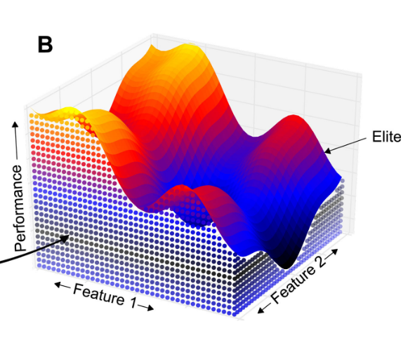
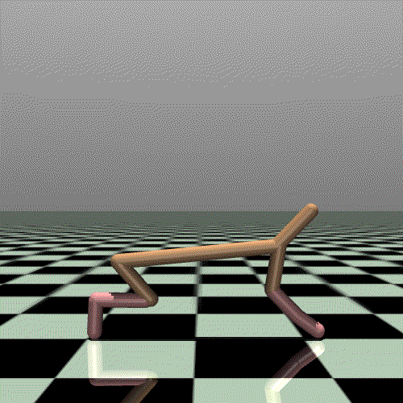
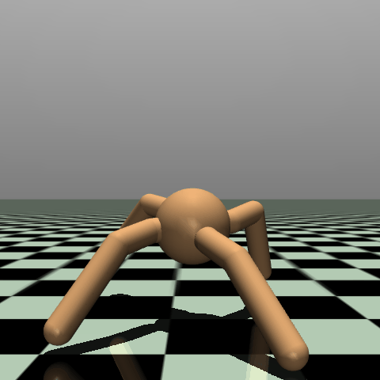

Visualizing Behavioural Traits of Quality-Diversity Algorithms with Natural Language Queries
1. Background
Traditional methods of reinforcement learning, such as gradient-based methods, often learn a single strategy for interacting with a task domain. Often times, there are different strategies that may be just as optimal for solving a task. Evolutionary algorithms that evolve a population of candidate solutions to a task are an approach that can capture these diverse policies.
The subset of evolutionary algorithms that are particularly interested in balancing the competitiveness of the solution with the novelty of the solution are known as Quality-Diversity algorithms. In this paper, we talk about one of these Quality-Diversity algorithms known as CMA-ME.
The CMA-ME algorithm is composed of two ideas common in the Evolutionary Computation field. The first is CMA-ES, a state-of-the-art black-box optimization algorithm. The second is MAP-Elites, a mechanism designed to preserve the diversity of the solutions found by an evolutionary algorithm. CMA-ME combines these strategies by using CMA-ES, for neuro-evolution, that is, using blackbox optimization to learn the weights of a neural network (as opposed to backpropagation).
While using MAP-Elites to archive the best neural networks by their behavioural traits.

Figure 1: The behavioural space captured by MAP-Elites
Figure 1 provides a visualization of the MAP-Elites archive. In this Figure, we characterize a solution by behavioural axes, labelled Feature 1 and Feature 2. In this case, these features measure the behaviour of a solution. While the Z-axis, is the overall fitness of the solution. The surface of the MAP-Elites archive is made up of elite solutions that are locally competitive. In other words, the best solution for that kind of distinct behaviour.
If you consider a reinforcement learning task such as learning to land a Lunar Lander. Two features could be the time that it takes to land the Lunar Lander; and, the fuel efficiency of the Lunar Lander. The Fitness would come directly from the task environment but it would be some reward signal that defines how effectively the Lunar Lander performed the landing. As you can imagine, a high fitness would be a smooth, safe landing while a low fitness would denote a crash landing.

Figure 2: Mujoco's HalfCheetah environment

Figure 3: Mujoco's Ant environment
In this paper, we will work with two Google DeepMind standard reinforcement learning benchmarks, the MuJoCo HalfCheetah-v5 environment and the Ant-v5 environment. Both task domains selected are locomotion tasks where the reward is characterized by how much distance can be travelled by the controllers within a fixed number of timesteps. The HalfCheetah-v5 environment is a bipedal controller task while the Ant-v5 environment is a quadripedal controller.
For a concrete example, a point in the MAP-Elites archive <0.5, 0.5, 100> might represent a solution that balances fuel-efficiency and time to land as equally important while achieving a cumulative reward of 100. Where another example <0.1, 0.9, -100> might represent a solution that minimizes the time required to land at the cost of fuel efficiency and results in a fitness of -100, a crash landing.
2. Problem Statement
This paper makes the two following novel contributions: we use natural language processing to annotate the candidate solutions based on their cartesian coordinates in the MAP-Elites archive with natural language descriptions.
To do this for the Mujoco environments, the features we choose to identify for the behavioural axes are the proportion of time that the leg comes into contact with the ground. In the HalfCheetah-v5 environment, this would be a 2-dimensional solution space where <x1, x2> represent the proportion of the time that the back leg is making contact with the ground, and the front leg is making contact with the ground respectively. For the Ant-v5 environment, this would be a 4-dimensional solution space <x1, x2, x3, x4> where each of the four legs proportion of time in contact with the ground is stored. The purpose of the features selected are to characterize the walking gait of the controller.
For the HalfCheetah-v5 environment, the MAP-Elites archive will be 3-dimensional. In which, the first two dimensions are the candidate solution's behaviour and the last dimension is the maximum fitness associated with the best performing solution with that behaviour.
For the Ant-v5 environment, the MAP-Elites archive will be 5-dimensional. Similarly to HalfCheetah-v5, the first four dimensions characterize the solution's behaviour, while the 5th dimension is the fitness of the elite solution matching that behaviour.
A solution for Ant-v5 might be <0.25, 0.25, 0.25, 0.25, 100> which receives a fitness/reward of 100 for each leg being in contact with the ground 1/4 of the time. While another solution might be <1.0, 1.0, 1.0, 1.0, 0> in which case a solution retrieves no reward because all legs never leave contact with the ground and thus never move.
In this case, our first novel contribution provides a predicted behaviour expressed in natural language based on the solutions position in the archive.
Our second novel contribution is to provide the nearest solution matching a given natural language query. For example "An individual that prefers to use only two legs." should return the individual mapping nearest to a point <0.2, 0.2, 0.8, 0.8>.
The first contribution solves the problem of analyzing behaviours. When training an evolutionary algorithm against a reinforcement learning task domain, it's possible for there to be 1000s of solutions at any given generation. Having a Natural Language Processing model capable of annotating these individuals automatically which saves the researcher the manual effort of doing so.
The second contribution makes the querying and analysis of the MAP-Elites archive significantly more feasible. Especially for high-dimensional solution spaces that aren't easily visible such as the Ant-v5 environment. Since it's difficult to visualize the archive, it's difficult to make sense of the fitness landscape of various strategies and difficult to look up individuals for further visualization. By having a natural language search we're effectively able to leverage natural language as a tool for analysis.
With both of these contributions, we expand the edge of what is currently possible with the intersection of Natural Language Processing, Reinforcement Learning and Evolutionary Computation. By doing so, we provide a stepping stone for other researchers to explore new ideas from. And with this new stepping stone, we hope to generate new interest in this area.
3. Possible Solutions
In order to make this paper happen, we have the following milestones set:
- Self-labelling individuals: Given a point in the behavioural space, generate a natural language description of the individual's capabilities.
- Natural language queries: Given a natural language description/query, return the nearest individual matching the description.
- Regional queries: Given a natural language description, as before, return a subset of individuals that match the description.
- Visualization: Given a query that selects a region of the behavioural space, illuminate the behavioural space graph with the search region.
In order to begin with the first milestone of self-labelling individuals. A language model such as GPT will be used. With careful prompt crafting, a dataset will be created for the HalfCheetah-v5 and Ant-v5 environments that map individual points to natural language descriptions of such points.
Just as a quick proof of concept, ChatGPT can be prompted with the following:
" For the Mujoco HalfCheetah environment. Imagine we use MAP-Elites to construct a behavioural archive of candidate solutions. In this case, the features we use as behavioural axes are: 1. the proportion of time that the back leg comes into contact with the ground and 2. the proportion of time that the front leg comes into contact with the ground. What do you imagine the resulting behaviour of <0.5, 0.5> would look like. How about <1.0, 1.0>? "
And it will respond with the following answer: " <0.5, 0.5>: Balanced trotting motion, moderate ground contact, relatively stable but not maximized for speed. <1.0, 1.0>: Very stable, shuffling motion with both legs in constant ground contact, resulting in slow movement and inefficient locomotion. "
We can use similar prompts for the entire domain of x1, and x2 and use data augmentation techniques to further increase the size of the dataset.
This should provide us with a sufficient amount of labels for each candidate solution.
The second milestone can utilize the same dataset collected for the first milestone. If we use a language model such as Sentence-BERT, we can train said model to learn vectors for each label in the dataset.
Then it would be possible to return the nearest individual in the archive simply by returning the individual in the archive with the lowest Euclidean distance from the latent vector found by the BERT model.
The third milestone would be to simply apply DB-SCAN clustering to the MAP-Elites archive such that each neighbourhood of similar behaviours is assigned a centroid. Then in order to return a region of individuals, we could simply
The fourth milestone is a simple extension of the third milestone, where we can use matplotlib and other visualization libraries to illuminate the region of the MAP-Elites archive based on the region retrieved by the natural language query in the third milestone.
Finally, we can qualitatively assess our model by seeing how well our natural language descriptions and queries describe the behaviours seen by visualizing the policies found by CMA-ME while interacting with the environment.
4. Related Work
In Salimans et al., Evolution Strategies are applied as an alternative paradigm to neural networks in reinforcement learning. They found that evolutionary algorithms are competitive with state-of-the-art gradient-based methods and invigorated research in the direction of evolutionary algorithms.
In Colas et. al, (Colas, Cédric and Madhavan, Vashisht and Huizinga, Joost and Clune, Jeff, 2020) they apply the MAP-Elites algorithm against the Mujoco's Ant environment. In their work, they characterize the behavioural axes of the MAP-Elites by the proportion of the time that each leg comes into contact with the ground. They also investigate the role of quality-diversity algorithms for damage recovery in robotics tasks. They do so by altering the Mujoco simulator to prevent the control of joints. In this case, they investigate if it is possible for the robotic controller to switch from a balanced 4-legged policy to a 3-legged policy without the damaged leg.
In Tjanaka et al, they provide pyribs (Tjanaka, Bryon and Fontaine, Matthew C and Lee, David H and Zhang, Yulun and Balam, Nivedit Reddy and Dennler, Nathaniel and Garlanka, Sujay S and Klapsis, Nikitas Dimitri and Nikolaidis, Stefanos, 2023), an implementation of the CMA-ME algorithm that combines the CMA-ES blackbox optimization method with the MAP-Elites archive. In this paper, pyribs is used to collect the training dataset for the HalfCheetah and Ant environments.
5. Project Plan
Week of October 28th
The training data will be collected using the pyribs implementation of CMA-ME. The first batch of data will include Then a dataset of labels/templates will be created using a large language model (GPT).
Week of November 4th
During this week, model training will begin in training the self-labelling implementation. Then the converse
Week of November 11th
Reading Week (I'm going on vacation)
Week of November 18th
Week of November 25th
Time reserved for collecting figures and writing the presentation and final report.
6. References
Colas, Cédric and Madhavan, Vashisht and Huizinga, Joost and Clune, Jeff (2020). Scaling MAP-Elites to deep neuroevolution, ACM.
Tjanaka, Bryon and Fontaine, Matthew C and Lee, David H and Zhang, Yulun and Balam, Nivedit Reddy and Dennler, Nathaniel and Garlanka, Sujay S and Klapsis, Nikitas Dimitri and Nikolaidis, Stefanos (2023). Pyribs: A Bare-Bones Python Library for Quality Diversity Optimization, Association for Computing Machinery.
7. Appendix:
Transcript linking the conversation provided in the Possible Solutions section.